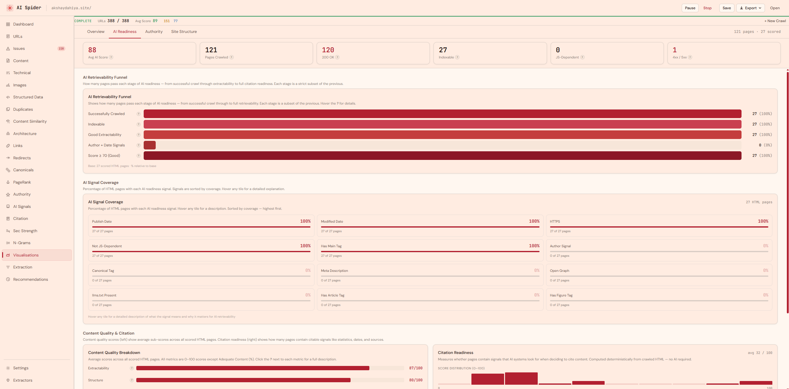

AI Spider – Locally-Hosted AI Retrievability & Technical SEO Crawler Platform_
A deterministic, session-based website crawler built for AI retrievability auditing, technical SEO analysis, and content intelligence — modeled after Screaming Frog but purpose-built for the AI-native search era. No LLM dependency. No data sent externally. Runs entirely on your machine.

Project Overview
Technical SEO tools were not built for the AI-native search era.
Modern website auditing requires:
- AI retrievability scoring per page
- Deterministic signal extraction without LLM dependency
- Content chunking and section strength analysis
- Robots.txt AI bot access auditing
- Citation readiness detection
- PageRank and HITS authority propagation
- Full link graph analysis
- Session-based local data storage
- Unlimited crawl depth and URL count
Existing crawlers provide:
- HTTP status code checking
- Basic metadata extraction
- Redirect chain detection
- Broken link identification
- Page speed metrics
They do not provide:
- AI retrievability scoring
- Bot access auditing for GPTBot, ClaudeBot, Perplexitybot
- Content extractability and structure scoring
- Chunk-level section strength analysis
- Citation signal detection
- HITS hub and authority propagation
- N-gram phrase extraction across all pages
- llms.txt and ai.txt discovery
- Locally-hosted, zero-cloud architecture
They were not designed for AI-native search visibility.
AI Spider was built to solve that gap.
It is not a basic crawler. It is a full-stack AI retrievability and technical SEO auditing platform.
What It Does
AI Spider enables SEO professionals and developers to:
- Crawl entire websites with unlimited URL depth and count
- Score every page for AI retrievability across 5 dimensions
- Audit which AI bots can and cannot access each page
- Analyse content structure, chunking quality, and section strength
- Detect citation signals — statistics, dates, sources, tables, lists
- Compute PageRank and HITS authority across the internal link graph
- Identify duplicate, near-duplicate, and orphan pages
- Extract N-gram phrases from all crawled content
- Analyse redirect chains, canonical conflicts, and hreflang errors
- Store all session data locally in SQLite — no external data transfer
It is a unified AI-native crawl intelligence system running entirely on your machine.
Core Capabilities
-
AI Retrievability Scoring Engine
Every crawled page receives a composite AI Retrievability Score (0–100) computed from five deterministic sub-scores: Extractability, Structure, Citability, AI Crawlability, and Chunk Quality. Scores are computed post-crawl without any LLM API calls — entirely from HTML signal extraction, content chunking, and rule-based scoring logic.
-
AI Bot Access Auditing
Parses robots.txt to determine access permissions for GPTBot, ClaudeBot, Perplexitybot, Applebot, CCBot, Google-Extended, and Diffbot per page. Detects data-nosnippet attributes, max-snippet directives, and noindex signals that block AI content extraction. Surfaces which pages are invisible to AI crawlers and why.
-
Content Chunking & Section Strength
Converts page HTML to Markdown, splits content into H2-delimited chunks, and scores each chunk for word count, sentence density, list presence, table presence, numerical data, and outbound links. Section Strength Score reflects how well each content section is structured for AI extraction and citation. Orphan chunks (no heading) score lower.
-
Link Graph Intelligence — PageRank & HITS
Extracts the complete internal link graph from crawled pages and computes normalised PageRank scores (0–100) across all pages. Also runs the HITS algorithm to compute Hub Scores (pages that link to authoritative destinations) and Authority Scores (pages endorsed by strong hubs). Identifies buried authority pages, orphan pages, and dead-end link structures.
-
Citation Readiness Detection
Scores each page for citation signals that AI systems use when selecting content to cite: statistical data, date references, source attributions, blockquote presence, HTML tables, and ordered/unordered lists. Citation Score (0–100) reflects how citable a page is in AI-generated responses — a signal beyond traditional SEO metrics.
-
17-Tab URL Intelligence Interface
Every crawled URL is surfaced across 17 specialised analysis tabs: URL Table, Content, Technical, Images, Links, Redirects, Canonicals, Structured Data, Issues, AI Signals, Authority, Citation, Section Strength, N-Grams, Architecture, Page Rank, and Visualisations. Column-resizable tables, real-time filtering, and PageIntelligencePanel slide-in drawer for per-URL deep dives.
-
N-Gram Phrase Intelligence
Extracts 1–4 gram phrases from title, meta description, headings, body, anchor text, and image alt attributes across all crawled pages. Ranks phrases by frequency and page coverage. Reveals the actual topic vocabulary of a site as AI systems see it — not keyword rankings, but content-level phrase density and distribution.
-
Duplicate & Near-Duplicate Detection
Uses SHA-256 content hashing for exact duplicate detection and TF-IDF cosine similarity for near-duplicate identification. Flags pages with content similarity above threshold, surfaces the closest matching URL, and identifies canonicalisation opportunities. Prevents AI systems from encountering diluted or conflicting page signals.
-
Session-Based Local Architecture
Every crawl creates a fresh SQLite session database stored locally. No data is sent to external servers, no API keys required for core functionality, and no usage limits. Sessions can be saved as .aispider files and reloaded for future analysis. Supports concurrent crawl configuration: concurrency, crawl delay, depth, user agent, custom headers, cookies, JS rendering via Playwright, and robots.txt respect.
The Challenge
SEO and content teams face:
- No tooling for AI bot access auditing
- No content extractability or structure scoring
- No citation signal detection at scale
- No chunk-level content quality analysis
- No N-gram phrase intelligence across entire sites
- No locally-hosted crawl infrastructure
- Expensive SaaS crawlers with per-URL pricing
- Tools optimised for keyword ranking, not AI visibility
Traditional crawlers separate:
- Technical auditing
- Content analysis
- Link intelligence
- AI readiness signals
- Citation modeling
They do not unify them into a single AI-native crawl session.
The Solution
Built a full-stack locally-hosted crawl intelligence platform composed of:
Backend:
- Node.js + Express API server
- Async concurrent crawl engine with worker pool
- Per-domain rate limiting and robots.txt enforcement
- Cheerio HTML parsing and signal extraction
- Readability pipeline, Markdown conversion, content chunking
- Flesch-Kincaid readability scoring
- TF-IDF cosine similarity for near-duplicate detection
- MinHash signature generation
- PageRank and HITS graph computation
- N-gram extraction across 6 content zones
- Citation and section strength scoring services
- Redirect and canonical chain analysis
- Structured data extraction and schema validation
- SSE real-time crawl progress streaming
- Session-based SQLite storage with .aispider file format
- Optional Playwright JS rendering layer
Frontend:
- React 19 + TypeScript 5.9
- Vite 7 build system
- React Router v7 for tab navigation
- Tailwind CSS v4 styling
- 17 analysis tabs with column-resizable virtualised tables
- PageIntelligencePanel slide-in drawer for per-URL analysis
- Real-time SSE-driven crawl progress bar
- Recharts visualisations across 4 visualisation sub-tabs
- Session manager with recent crawl history
- Custom extractor builder for bespoke signal extraction
- Export menu for CSV, Excel, and PDF outputs
All scoring, signal extraction, and intelligence computation runs backend-authoritative. Nothing is calculated or manipulated client-side.
Why It Matters
AI-native search is restructuring how content gets discovered and cited.
Brands and SEO teams must understand:
- Whether AI bots can access and extract their content
- Whether page structure supports AI-readable chunking
- Whether content contains citation-worthy signals
- Whether internal link authority is distributed correctly
- Whether duplicate content is diluting AI visibility
- Whether llms.txt and ai.txt are present and valid
AI Spider provides deterministic crawl intelligence for the AI search era — no LLM required, no cloud dependency, no per-URL limits.
It transforms technical SEO auditing into AI-retrievability-first crawl intelligence operations.
Future Expansion
- LLM-powered content intelligence layer (optional)
- Entity extraction and knowledge graph mapping
- Query simulation and retrieval scoring
- Scheduled recrawl and delta comparison
- Multi-site session comparison
- Competitor crawl benchmarking
- MCP server integration for AI agent workflows
- Playwright full JS rendering mode
- SaaS cloud deployment layer
- Executive PDF reporting suite
- API access for CI/CD pipeline integration
Project Positioning Statement
AI Spider is a locally-hosted, session-based website crawler and AI retrievability auditing platform that combines deterministic signal extraction, content chunking intelligence, AI bot access auditing, citation readiness scoring, PageRank and HITS authority propagation, N-gram phrase analysis, and 17-tab URL intelligence into a unified crawl infrastructure purpose-built for the AI-native search era.
Project Details
-
Category AI Crawl Intelligence
-
Architecture Full-Stack Local
-
Year 2026
{kind=link}
{kind=link}
{kind=link}